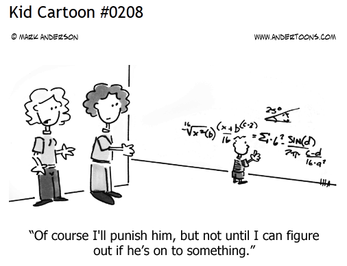

Mindful Manipulation

What do we mean by Mindful Manipulation?

A particularly difficult point of Algebra is that many expression might mean (or evaluate to) the same thing. For example, the quantity x^2 is the same as the quantity x^2+1-1 or 2(x^2)/2, and so on. (By the way, this is also related to the main difficulty with fractions, i.e., many fractions mean the same thing: 2/3 = 4/6=8/12,..., multiple representation of mathematical quantities adds an interesting and necessary complexity to our understanding of the world). Okay, so I agree, these are pretty benign examples. Just take the +1-1 to 0 and 2/2 to 1 and you are done. However, these are the beginnings of more complicated examples where representation do have an impact in our understanding and ability to work with these quantities. Consider the case of a quadratic polynomial as explain in Meaningful Use of Symbols. Which one of the following representations do you think is more useful to find (a) minimum/maximum values and (b) roots, (1) x^2-7x+12, (2) (x-3)(x-4) or (3) =(x-7/2)^2-1/4?
These examples hints at what we mean by Mindful Manipulation. As stated by the authors in the Reasoning and Sense Making series: "Mindful manipulation includes learning algebraic manipulation as a process guided by understanding and goals (how do I want to use this expression, and what will make it most useful for this purpose?) and seeing that the basic rules of arithmetic provide a rationale for all legitimate manipulations of polynomial expressions. Of these, the distributive property, which is the only rule connecting the operations of addition and multiplication, is the one to which we must constantly appeal when doing anything that involves both operations at once, including a wide range of manipulations: expanding, factoring, collecting like terms, and putting fractions over a common denominator."
Examples
Algebra as Bookkeeping: flipping a coin

Consider the usual experiment of flipping a fair coin n number of times. We can use Algebra to figure what are the possible number of heads or tails we can obtain from this experiment. To keep things simple (for now) let us consider this experiment when we flip the coin twice. In the spirit of Meaningful Use Of Symbols, let H denote the case when we flip a head and T denote the case of a tail. Then, consider the following quadratic expression: (H+T)^2 = (H+T)(H+T) = HH + HT + TH + TT. Note that I have rewritten the product (H+T)^2 not in the usual form (H+T)^2 = H^2+2HT+T^2, but instead in a form that is mindful for the problem at hand.
The interpretation is the following: if we flip a coin we might get either a head or a tail. Symbolically, we can think of this case as H+T, where we read the symbol + as a kind of "or". If we flip a coin twice, then we can also get a heads or a tails on the second flip. But if we analyze the polynomial (H+T)^2 = (H+T)(H+T), we see that for each flip we can associate the formal expression (H+T). Two flips will then be written as (H+T)(H+T) = HH + HT + TH + TT once you multiply this out. This last expression contains the information of all possible outcomes, i.e., if we read multiplication as a kind of "and", then HH means we could get two heads, HT means we can get a head on the first flip and a tail on the second and so on. Note that these symbols are concatenated with a "+" so that we could either get HH (two heads) or HT (first a head and then a tail) or TH (first a tail and then a head) or finally TT (two tails).
Further Bookkeeping: how many tails? how many heads?
This very interesting use of Algebra as a Bookkeeping device where we read symbols just as formal expressions rather than numbers and extract information from them can be extended further. Consider now the case where we want to know not all possible outcomes of flipping a fair coin twice, but rather we want to know what is more likely: to get all heads or to get a heads and a tails? Looking back at the expression (H+T)^2 we can see now that writing this expression in the more usual form: (H+T)^2 = H^2+2HT+T^2, is a more Mindful Manipulation since the information encoded in this expression reads something like: we can get either all heads and or all tails, each of this have only 1 possible outcome (you can think of H^2 as having a coefficient of 1 in front of it so H^2= 1*H^2) or we can get HT (heads and tails) in two cases wich we know are HT and TH, hence HT+TH = 2HT, exactly the expression we had before. Clearly, it is more like to get either a head or a tail than getting both heads of both tails, just by reading the algebraic expression. Keep in mind that his only works in case the coin is fair.
Why Mindful Manipulation is important for the teaching of Algebra in grades 7-12?
There are too many ways to manipulate an algebraic expression. However, for a given goal there are usually fewer or just a few ways to manipulate an expression to get it into a form from which we can easily extract meaning. As teachers, we should point students in the right direction and show them that the power of algebra lies not in manipulating an expression just for the heck of it, but in Mindful Manipulation, oriented towards a clear goal.